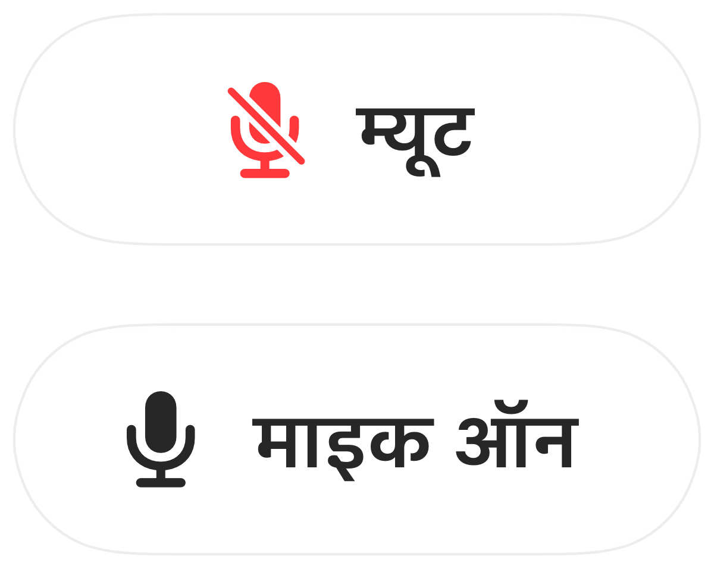

कीबोर्ड शॉर्टकट से Mac पर अपना माइक्रोफ़ोन कैसे म्यूट करें
macOS में डिक्टेशन के लिए एक की होती है लेकिन माइक म्यूट करने के लिए कोई की नहीं होती। हर कॉल ऐप का अपना अलग शॉर्टकट होता है, और वह भी तभी काम करता है जब वह ऐप स्क्रीन पर सामने खुला हो।
Muffle एक ऐसा शॉर्टकट जोड़ता है जो खुद माइक्रोफ़ोन को म्यूट कर देता है, वह भी एक साथ हर ऐप में। इसका डिफ़ॉल्ट शॉर्टकट Control-Option-M है, और आप अपनी पसंद का कोई भी कॉम्बिनेशन चुन सकते हैं।
एक शॉर्टकट से म्यूट करें
- 1
Muffle इंस्टॉल करें।
- 2
म्यूट करने के लिए Control-Option-M दबाएं। मेनू बार आइकन लाल हो जाता है और स्क्रीन पर छोटा सा “म्यूट” कन्फर्मेशन दिखता है।
- 3
अनम्यूट करने के लिए इसे फिर से दबाएं।
- 4
इसे बदलने के लिए, Muffle सेटिंग्स खोलें, शॉर्टकट पर क्लिक करें और कोई नया शॉर्टकट दबाएं।

- म्यूट रहते हुए बात करने के लिए शॉर्टकट को दबाए रखें, और फिर से म्यूट करने के लिए छोड़ दें।
- माउस से तुरंत म्यूट करने के लिए Muffle मेनू बार आइकन पर राइट-क्लिक करें।
अक्सर पूछे जाने वाले सवाल
क्या यह शॉर्टकट तब भी काम करता है जब कॉल ऐप सामने न खुला हो?
हाँ। यह फ़ुल-स्क्रीन ऐप समेत किसी भी ऐप से काम करता है।
क्या मैं F5 जैसी किसी एक की का इस्तेमाल कर सकता हूँ?
हाँ। फ़ंक्शन की अकेले काम करती हैं; बाकी कीज़ के लिए Control, Option या Command की ज़रूरत होती है।